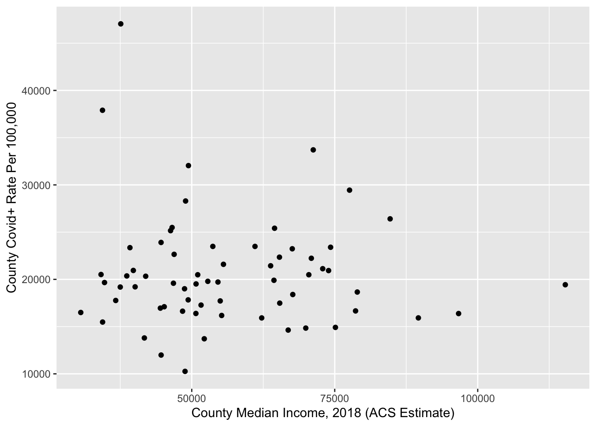
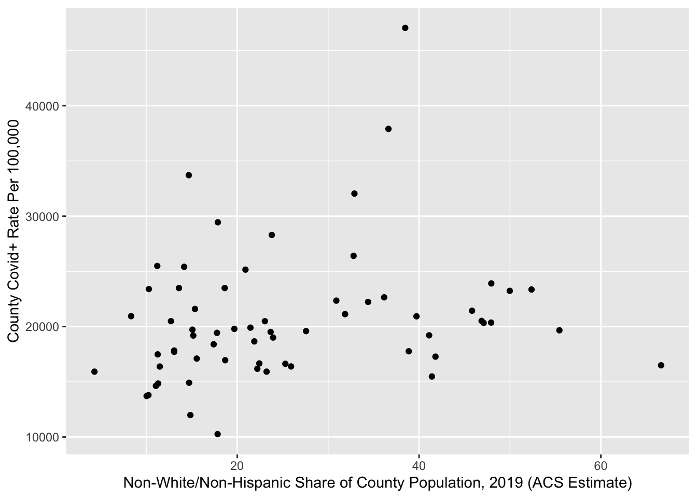

14 Integrating census data and external data
14.1 Reading external data into R Studio
Colorado open Covid-19 data is available here: https://data-cdphe.opendata.arcgis.com/datasets/colorado-covid-19-positive-cases-and-rates-of-infection-by-county-of-identification/explore?location=38.997818%2C-105.550873%2C7.60&showTable=true
For the purpose of this workshop, we’ve also placed this data (which runs through January 23, 2022) on dropbox, available here: https://www.dropbox.com/s/954sfaykdcs2q4f/co_covid.csv?dl=0.
It is possible to read data into R Studio straight from an online source. To read in a file stored on Dropbox, simply change the “0” at the end of the link into a “1” and paste it into the read_csv function. Here, we’ll read the Colorado Covid dataset into our R environment directly from the online source, and assign it to a new object named co_covid.
co_covid<-read_csv("https://www.dropbox.com/s/954sfaykdcs2q4f/co_covid.csv?dl=1")##
## ── Column specification ─────────────────────────────────────────────────────────────────────────────────────────
## cols(
## .default = col_double(),
## FULL_ = col_character(),
## GEOID = col_character(),
## LABEL = col_character(),
## STAETFP = col_character(),
## COUNTY = col_character(),
## COUNTYFP = col_character(),
## Data_Source = col_character(),
## Date_Data_Last_Updated = col_character()
## )
## ℹ Use `spec()` for the full column specifications.co_covid## # A tibble: 67 x 29
## OBJECTID FULL_ GEOID LABEL STAETFP COUNTY COUNTYFP County_Pos_Cases County_Populati… County_Rate_Per…
## <dbl> <chr> <chr> <chr> <chr> <chr> <chr> <dbl> <dbl> <dbl>
## 1 1 Sagu… 08109 Sagu… 08 SAGUA… 109 993 6414 15482.
## 2 2 Sedg… 08115 Sedg… 08 SEDGW… 115 412 2409 17103.
## 3 3 Chey… 08017 Chey… 08 CHEYE… 017 282 1743 16179
## 4 4 Cust… 08027 Cust… 08 CUSTER 027 565 4713 11988.
## 5 5 La P… 08067 La P… 08 LA PL… 067 11076 55649 19903.
## 6 6 San … 08111 San … 08 SAN J… 111 182 714 25490.
## 7 7 Pitk… 08097 Pitk… 08 PITKIN 097 5853 17363 33710.
## 8 8 Park… 08093 Park 08 PARK 093 2550 17427 14632.
## 9 9 Alam… 08003 Alam… 08 ALAMO… 003 3814 16329 23357.
## 10 10 Prow… 08099 Prow… 08 PROWE… 099 2308 12015 19209.
## # … with 57 more rows, and 19 more variables: County_Pos_Cases_Yesterday <dbl>, County_Pos_Cases_Change <dbl>,
## # County_Deaths <dbl>, County_Deaths_Yesterday <dbl>, County_Deaths_Change <dbl>, State_Pos_Cases <dbl>,
## # State_Population <dbl>, State_Rate_Per_100000 <dbl>, State_Deaths <dbl>, State_CDC_Deaths <dbl>,
## # State_Number_Hospitalizations <dbl>, State_Number_Tested <dbl>, State_Test_Encounters <dbl>,
## # State_Number_of_Counties_Pos <dbl>, State_Number_of_Outbreaks <dbl>, Data_Source <chr>,
## # Date_Data_Last_Updated <chr>, Shape__Area <dbl>, Shape__Length <dbl>Alternatively, if the dataset you want to load into R has already been downloaded to your computer, simply paste in the filename into the read_csv function. For example:
co_covid<-read_csv("co_covid.csv")Note that reading in downloaded data with the filename (here, co_covid.csv) is only possible if the file is in our working directory; if it is in another directory, we must pass the full path to the file into the read_csv function.
co_covid_medianincome<-inner_join(median_income_nodegree, co_covid,by="GEOID")co_covid_medianincome## # A tibble: 64 x 36
## GEOID County State variable median_income moe NAME.y no_degree_pct OBJECTID FULL_ LABEL STAETFP COUNTY
## <chr> <chr> <chr> <chr> <dbl> <dbl> <chr> <dbl> <dbl> <chr> <chr> <chr> <chr>
## 1 08035 Dougl… " Co… B19013_… 115314 2028 Dougl… 42.1 52 Doug… Doug… 08 DOUGL…
## 2 08039 Elber… " Co… B19013_… 96658 4279 Elber… 64.1 59 Elbe… Elbe… 08 ELBERT
## 3 08014 Broom… " Co… B19013_… 89624 4013 Broom… 44.5 21 Broo… Broo… 08 BROOM…
## 4 08037 Eagle… " Co… B19013_… 84685 4478 Eagle… 51.9 18 Eagl… Eagle 08 EAGLE
## 5 08059 Jeffe… " Co… B19013_… 78943 1142 Jeffe… 55.9 12 Jeff… Jeff… 08 JEFFE…
## 6 08013 Bould… " Co… B19013_… 78642 1583 Bould… 39.2 15 Boul… Boul… 08 BOULD…
## 7 08117 Summi… " Co… B19013_… 77589 4772 Summi… 49.0 13 Summ… Summ… 08 SUMMIT
## 8 08047 Gilpi… " Co… B19013_… 75120 6107 Gilpi… 61.3 45 Gilp… Gilp… 08 GILPIN
## 9 08107 Routt… " Co… B19013_… 74273 3839 Routt… 49.6 39 Rout… Routt 08 ROUTT
## 10 08005 Arapa… " Co… B19013_… 73925 902 Arapa… 57.8 62 Arap… Arap… 08 ARAPA…
## # … with 54 more rows, and 23 more variables: COUNTYFP <chr>, County_Pos_Cases <dbl>, County_Population <dbl>,
## # County_Rate_Per_100_000 <dbl>, County_Pos_Cases_Yesterday <dbl>, County_Pos_Cases_Change <dbl>,
## # County_Deaths <dbl>, County_Deaths_Yesterday <dbl>, County_Deaths_Change <dbl>, State_Pos_Cases <dbl>,
## # State_Population <dbl>, State_Rate_Per_100000 <dbl>, State_Deaths <dbl>, State_CDC_Deaths <dbl>,
## # State_Number_Hospitalizations <dbl>, State_Number_Tested <dbl>, State_Test_Encounters <dbl>,
## # State_Number_of_Counties_Pos <dbl>, State_Number_of_Outbreaks <dbl>, Data_Source <chr>,
## # Date_Data_Last_Updated <chr>, Shape__Area <dbl>, Shape__Length <dbl>co_covid_medianincome_viz<-co_covid_medianincome %>%
ggplot()+
geom_point(aes(x=median_income,y=County_Rate_Per_100_000))+
ylab("County Covid+ Rate Per 100,000")+
xlab("County Median Income, 2018 (ACS Estimate)")co_covid_medianincome_viz
income_cases_corr<-cor.test(co_covid_medianincome$median_income, co_covid_medianincome$County_Rate_Per_100_000)
income_cases_corr##
## Pearson's product-moment correlation
##
## data: co_covid_medianincome$median_income and co_covid_medianincome$County_Rate_Per_100_000
## t = -0.5885, df = 62, p-value = 0.5583
## alternative hypothesis: true correlation is not equal to 0
## 95 percent confidence interval:
## -0.3145776 0.1744741
## sample estimates:
## cor
## -0.0745316acs_2019_nonwhite_COcounties<-get_acs(geography="county",
state="CO",
variables="B03002_003",
summary_var = "B03002_001",
year=2019) %>%
mutate(white_pct=(estimate/summary_est)*100) %>%
mutate(nonwhite_pct=100-white_pct)## Getting data from the 2015-2019 5-year ACS## Using FIPS code '08' for state 'CO'co_covid_race<-inner_join(acs_2019_nonwhite_COcounties, co_covid,by="GEOID")co_covid_race_viz<-co_covid_race %>%
ggplot()+
geom_point(aes(x=nonwhite_pct,y=County_Rate_Per_100_000))+
ylab("County Covid+ Rate Per 100,000")+
xlab("Non-White/Non-Hispanic Share of County Population, 2019 (ACS Estimate)")
nonwhite_cases_corr<-cor.test(co_covid_race$nonwhite_pct, co_covid_race$County_Rate_Per_100_000)
co_covid_race_viz
nonwhite_cases_corr##
## Pearson's product-moment correlation
##
## data: co_covid_race$nonwhite_pct and co_covid_race$County_Rate_Per_100_000
## t = 1.6873, df = 62, p-value = 0.09657
## alternative hypothesis: true correlation is not equal to 0
## 95 percent confidence interval:
## -0.03824775 0.43303727
## sample estimates:
## cor
## 0.2095315